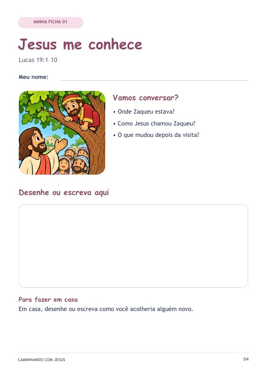
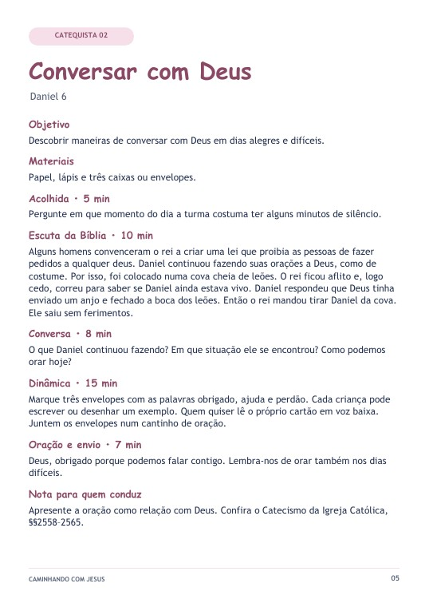

Antes do encontro
Escolha a passagem, leia o roteiro e separe os materiais.
Roteiros católicos com passagem bíblica, conversa, dinâmica e uma ficha para cada criança. Para crianças de 7 a 10 anos.
Acesso digital após a confirmação do pagamento


 12encontros
12encontrosComo é por dentro
Objetivo, materiais e tempo sugerido para cada etapa.
A passagem acompanha perguntas para entender e aplicar a história.
Uma proposta com materiais fáceis de encontrar.
Página para conversar, escrever ou desenhar.
Como usar
Escolha a passagem, leia o roteiro e separe os materiais.
Leia com a turma e use a ficha para desenhar, escrever e levar a conversa para casa.
O conteúdo
O que você recebe
Pagamento único · entrega por e-mail
Confira o preço e escolha a forma de pagamento no checkout.
O arquivo digital é entregue após a confirmação do pagamento.
Abra o PDF ou imprima as páginas que vai utilizar.
Dúvidas
É um PDF digital. Dá para abrir no celular ou no tablet e imprimir as páginas que quiser.
Para catequistas católicos e turmas de catequese infantil.
Cerca de 45 minutos, com adaptação à sua turma.
O PDF é enviado por e-mail depois que o pagamento é aprovado.